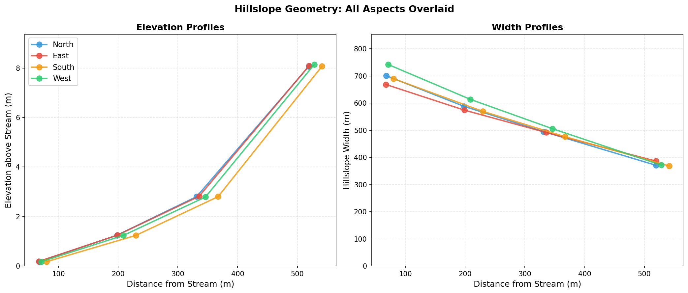
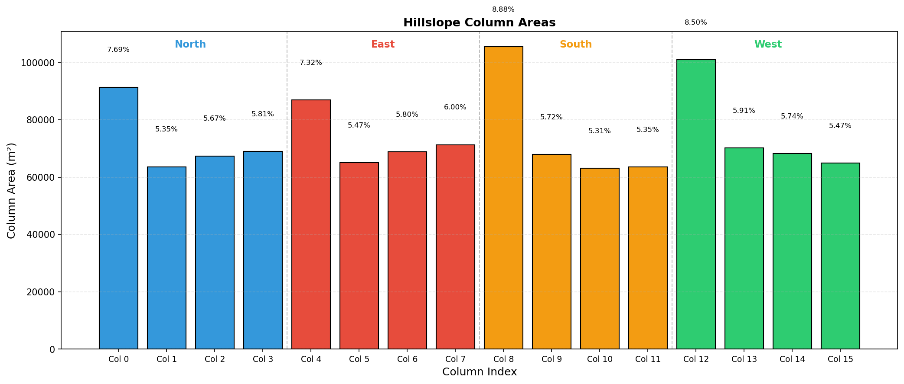

Dataset Comparison¶
Comparison of Swenson's global hillslope parameters (90m MERIT DEM) against OSBS-specific parameters derived from 1m NEON LIDAR.
Datasets¶
| Dataset | Source DEM | Resolution | Coverage | Lc | A_thresh | Structure |
|---|---|---|---|---|---|---|
| Swenson (Global) | MERIT | ~90m | Full OSBS gridcell | 763 m | 275,400 m² | 4 aspects × 4 HAND bins = 16 columns |
| OSBS (Current) | NEON LIDAR | 1m | R4C5-R12C14 (90 tiles, 90 km²) | 356 m | 63,362 m² | 1 aspect × 24 HAND bins + 1 lake = 25 columns |
The Swenson file (hillslopes_osbs_c240416.nc) was extracted from the global 0.9×1.25° dataset at the OSBS gridcell. The OSBS file (hillslopes_osbs_production_c260505.nc) was generated by the pipeline described on the Methodology page. The structural change (1 aspect, 24 bins, dedicated lake column) is documented on HAND Binning and Lake Column.
Variable Sources¶
Computed from DEM¶
| Variable | Method |
|---|---|
hillslope_elevation |
Mean HAND (Height Above Nearest Drainage) per elevation bin |
hillslope_distance |
Median DTND (Distance To Nearest Drainage) per bin |
hillslope_width |
Trapezoidal plan-form fit (Swenson & Lawrence 2025) |
hillslope_area |
Fitted trapezoidal areas, not raw pixel counts |
hillslope_slope |
Mean topographic slope from DEM gradient |
hillslope_aspect |
Circular mean aspect per bin |
pct_hillslope |
Relative area fraction per aspect |
hillslope_stream_slope |
Elevation drop along stream network segments |
Interim and placeholder values¶
| Variable | OSBS Value | Swenson (Global) | Notes |
|---|---|---|---|
hillslope_bedrock_depth |
0.0 m | 0.0 m | No-op under CTSM Uniform soil profile |
hillslope_stream_depth |
1.519 m | 0.269 m | Swenson power law applied at OSBS stream geometry; inert under routing-off |
hillslope_stream_width |
59.2 m | 4.41 m | Swenson power law; inert under routing-off |
hillslope_stream_slope |
0.00690 m/m | 0.00233 m/m | Computed from DEM stream network (production domain) |
The OSBS stream-channel parameters are larger than Swenson's because the production domain's accumulation network (denser at 1 m than at MERIT 90 m) sets a larger drainage-area input to Swenson's power-law relation. They are stored in the NetCDF for completeness; under the operative use_hillslope_routing=.false. configuration, none of these values are read by CTSM (Lateral Flow and Routing).
Parameter Comparison¶
The two datasets have different column structures and cannot be compared aspect-by-aspect. The OSBS production file uses a single omnidirectional aspect with 24 HAND bins plus a dedicated lake column; the Swenson global file uses Swenson's default 4 × 4 partition. Values below summarize column-level statistics from each file. Sources: OSBS production hillslope_params.json and production_summary.txt; Swenson NetCDF.
| Parameter | Swenson (Global) | OSBS (Current) |
|---|---|---|
| Aspects × HAND bins | 4 × 4 | 1 × 24 |
| Lake column | None | Chain index 1, hill_elev = −6.0 m, hill_area ≈ 10.68 km² (NWI aggregate) |
| Hillslope-element HAND range (m) | 0.17 — 8.14 | −5.13 — 12.46 (land bins; lake at −6.0) |
| Hillslope-element DTND range (m) | 67 — 541 | 3 — 353 |
| Stream-network slope (m/m) | 0.00233 | 0.00690 |
| Lc (m) | 763 | 356 |
| Stream cells, fraction of domain | n/a (gridcell aggregate) | 0.15 % (1m resolution) |
The OSBS file's negative HAND values are real terrain — pixels in filled depressions where raw HAND (elevation minus pit-filled DEM) is below zero. The 24-bin scheme bins on raw HAND so that flood-zone columns retain their submerged character rather than being clipped to zero by the depression fill. See HAND Binning and Lake Column for the Q01/Q99 outlier-trim derivation and per-bin area allocation.
Key Observations¶
1. Distance scales differ by ~1.5-2×. Swenson distances range 67-541 m; OSBS land-bin distances range 3-353 m. This is much closer than previous (pre-fix) runs showed (5-25× difference) because the current pipeline uses hydrological DTND (distance to the drainage-linked stream pixel) rather than EDT (distance to the geographically nearest stream pixel). The remaining ~1.5× difference reflects the denser stream network from higher-resolution data: Lc = 356 m at 1 m vs Lc = 763 m at 90 m, producing more stream pixels per unit area.
2. Land-bin slopes are systematically higher at 1 m than 90 m. Full 1 m resolution captures local topographic variability that 90 m MERIT averages away. This is expected — slope is the most resolution-sensitive of the six parameters (Phase B confirmed systematic underestimation at coarser resolution, ~50 % reduction at 4 m vs 1 m in the lowest HAND bin).
3. Negative HAND values appear in the OSBS file. Swenson's MERIT-derived file has only positive HANDs (0.17-8.14 m). The OSBS production file has 12 flood-zone bins covering −5.13-0 m HAND because the 1 m LIDAR resolves real terrain below the depression-filled drainage network (depressions, swales, lake margins). These bins are physically meaningful at OSBS — the saturation gradient through the flood zone is the TAI signal the column structure is designed to resolve.
4. The OSBS file has a dedicated lake column. The Swenson global file has no lake representation; lake area is implicit in the gridcell-aggregated parameters. The OSBS file places all NWI open water (≈ 10.68 km², ~12 % of the production domain) in a separate column at chain index 1, so that two-way water exchange between the lake and adjacent land bins is explicit in the CTSM column chain.
5. The aspect partition is collapsed at OSBS. Swenson's 4-aspect default expresses the difference between sun-facing and shaded hillslopes. At OSBS, with slopes universally below 0.06 m/m, aspect-dependent insolation has negligible physical impact (<6 % correction to solar incidence angle), so the same 24 HAND bins serve every direction and the aspect dimension is collapsed to 1.
Elevation and Width Profiles¶
Swenson (Global — 90m MERIT)¶

OSBS (Current — 1m NEON LIDAR)¶
Elevation and width profile plots for the current production data will be added here.
The plots will show the OSBS column chain on a single aspect: HAND above stream (left panel) and hillslope width (right panel) vs distance from stream (x-axis), with the lake column annotated at chain index 1.
Column Area Distribution¶
Swenson (Global — 90m MERIT)¶

OSBS (Current — 1m NEON LIDAR)¶
Column area distribution plots for the current production data will be added here.
Expected pattern: bar charts showing area per column, grouped by aspect. Expect relatively uniform distribution across bins and aspects for the flat OSBS terrain, in contrast to Swenson's global data where the lowest bin captures disproportionately more area.
Implications for CTSM Simulations¶
1. Lateral flow dynamics. Shorter hillslope distances (3-353 m vs 67-541 m) mean faster lateral water redistribution between columns. The shorter flow paths reduce the response time of the inter-column Darcy gradient (SoilHydrologyMod.F90), which runs whenever use_hillslope=.true. independent of the routing toggle (Lateral Flow and Routing).
2. Hydraulic gradients. The 24-bin scheme is denser in HAND space near the stream channel and lake margin than the 4-bin equal-area default; adjacent-bin elevation differences are sub-meter through the TAI core (0.25 m bin width × terrain-driven HAND increments). Combined with the dedicated lake column at chain index 1, the column chain captures the wet-to-dry gradient at the LIDAR noise floor.
3. TAI representation. Phase F deploys this file in osbs.swenson.spinup under use_hillslope=.true., use_hillslope_routing=.false.. Inter-column lateral flow between flood-zone bins and adjacent land bins is active in this configuration; Phase H Tracks B/C would add the CTSM-internal stream-channel boundary condition at the chain terminus.
4. Column weighting. OSBS column weights are calibrated by the per-rep rescaling: nhill_implicit ≈ 533 rep-hillslope copies per landunit, with the lake column at wtlunit ≈ 12.3 %. The land bins partition the remainder according to their NWI-masked, water-excluded pixel areas. See HAND Binning and Lake Column for the rescaling derivation.